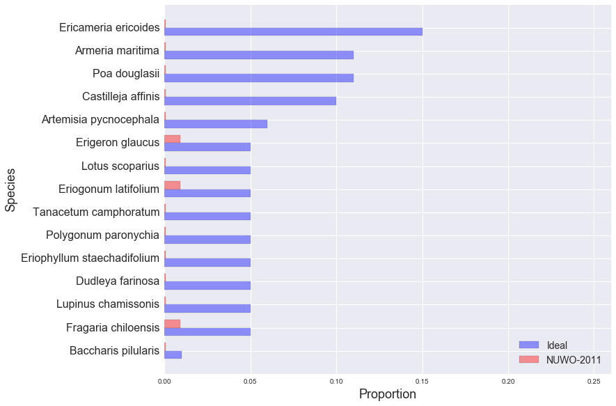

golden gate national parks conservancy: scrub mix
NUWO-2011
EAPO-2011
NMS-2010
NMS-2011
NMS-2012
NUWO-2010
NUWO-2011
NUWO-2012
SUDU-2008
SUDU-2009
SUDU-2010
SUDU-2011
SUDU-2012
Ideal and Observed Scrub Mix, NUWO-2011:
Other Species in NUWO-2011 Sample:
| Species | Observed % |
|---|---|
| Lolium sp. | 27.03% |
| Vulpia sp. | 10.81% |
| Hordeum sp. | 9.91% |
| Rubus ursinus | 5.41% |
| Fumaria parviflora | 5.41% |
| Stellaria media | 5.41% |
| Vulpia myuros | 3.60% |
| Solanum sp. | 3.60% |
| Marah fabaceus | 3.60% |
| Scrophularia californica | 3.60% |
| Poa annua | 2.70% |
| Medicago polymorpha | 2.70% |
| Geranium molle | 2.70% |
| Melilotus indica | 1.80% |
| Lupinus arboreus | 1.80% |
| Galium aparine | 1.80% |
| Vicia sativa | 0.90% |
| Grindelia hirsutula | 0.90% |
| Raphanus sativus | 0.90% |
| Pinus radiata | 0.90% |
| Iris douglasii | 0.90% |
| Geranium dissectum | 0.90% |